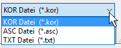

")
Daten aus Fremdprogrammen übernehmen. Ruft den Dialog Öffnen auf.
Wählen Sie die zu importierende Datei aus.
(Suchen in)
Suche im Verzeichnisbaum.
Dateiname
Eingabe des Dateinamens.
(Dateityp)
Sie können zwischen Ñ*.ASCì, Ñ*.TXTì, und Ñ*.KORì ñ Dateien wählen.

Nachdem Sie auf Öffnen geklickt haben, werden die Koordinaten importiert. Diese liegen innerhalb eines Rahmens, den Sie auf der Zeichenfläche platzieren können. Ist die Plotfläche zu klein, können Sie diese durch einen Klick auf die Schaltfläche Plotfläche vergrößern. Die Koordinaten werden aus der zuletzt gewählten Einstellung übernommen.
Die weitere Bearbeitung kann z. B. mit [Konst1 | Linien | Puverb > nPunkte], [Konst2 | Wandze] oder [Konst1 | Linien | zeichn | Frei | PolyLi] erfolgen.
Zugehörige Referenzen: